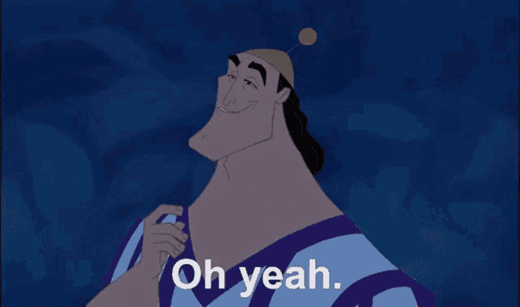
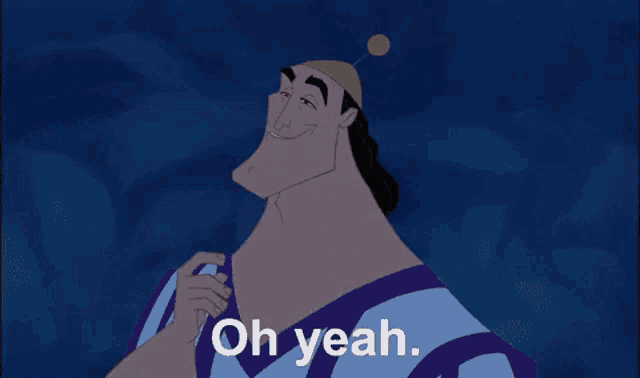
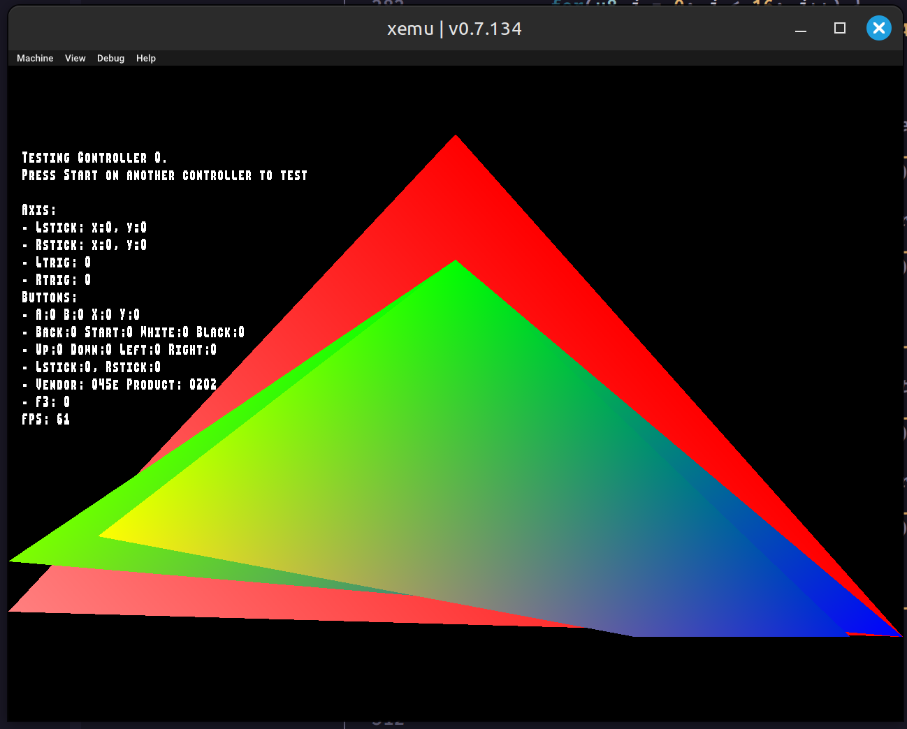
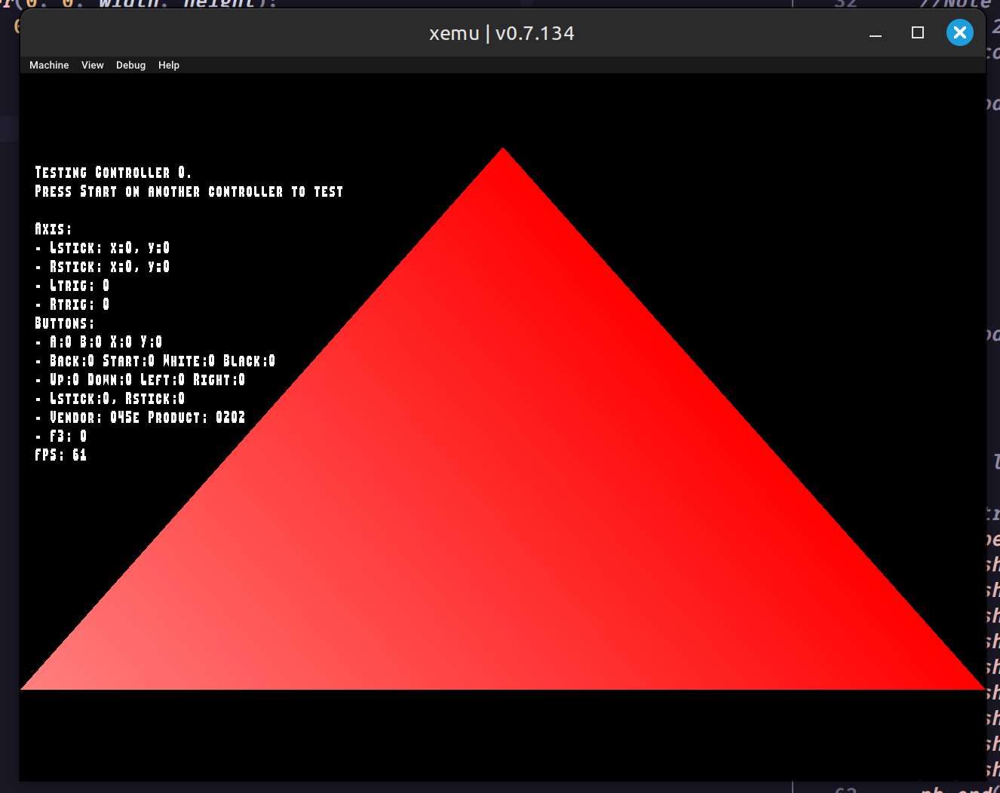

Using Pbkit and NXDK. Thanks to @mborgerson and @badsectoracula for helping me out!
https://github.com/jhoffis/xprojScreenshot from 2024-12-04 13-37-15:
 

i now realize why the cube looked so strange. It was using the viewport as the model, the model as the view, and the view as the projection.
Screenshot from 2024-12-03 16-00-39:

seems like the z is around 1000 times shorter or smt and of course the x value is wider because 16:9
Screenshot from 2024-12-03 15-11-57:

I have this cube now, but it does not rotate well. It kinda skews and stretches and only eventually fully turns around. It's supposed to be a equal length, width, height cube.
Screenshot from 2024-12-02.13-21-06:
Screenshot from 2024-12-02 12-56-07:

The first triangle (1st of December 2024):
